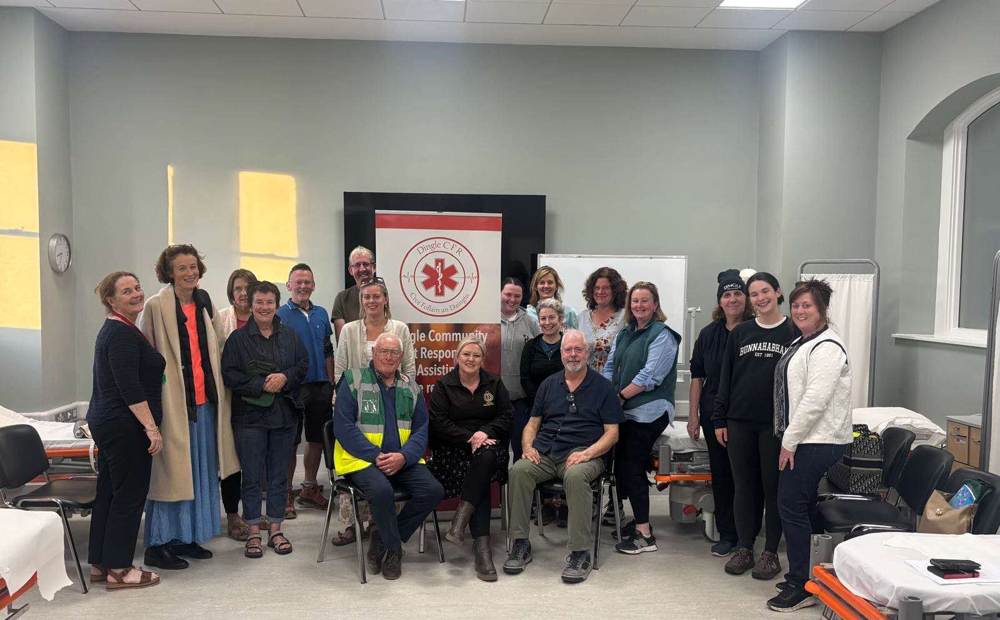
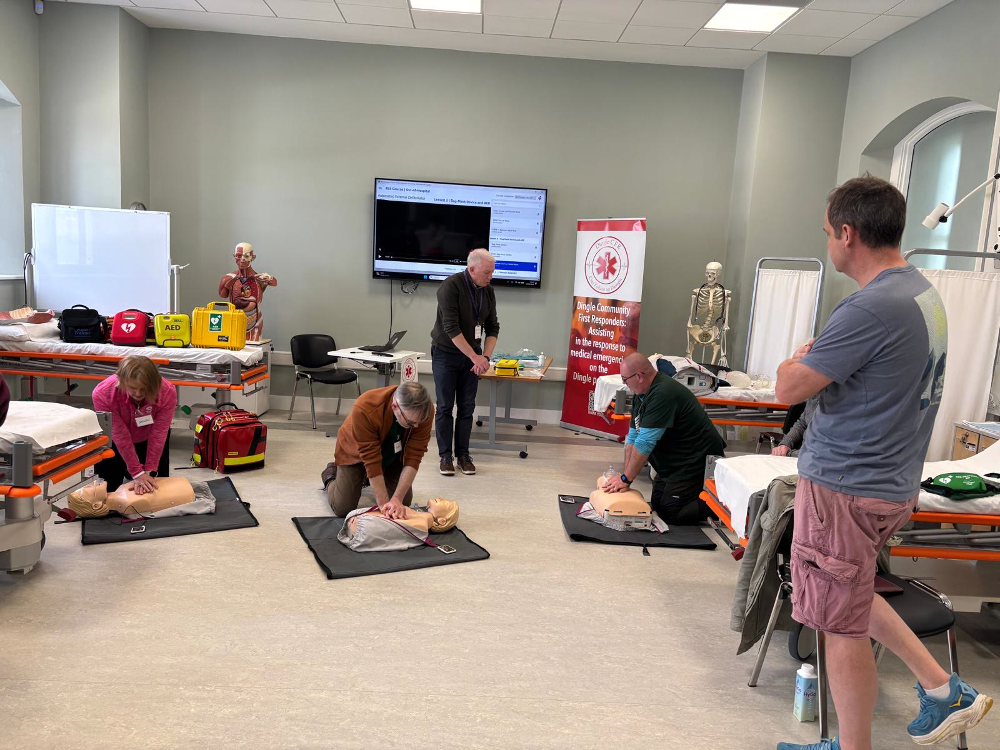
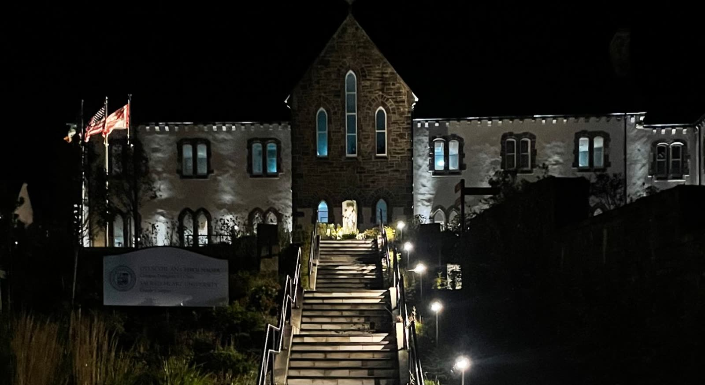
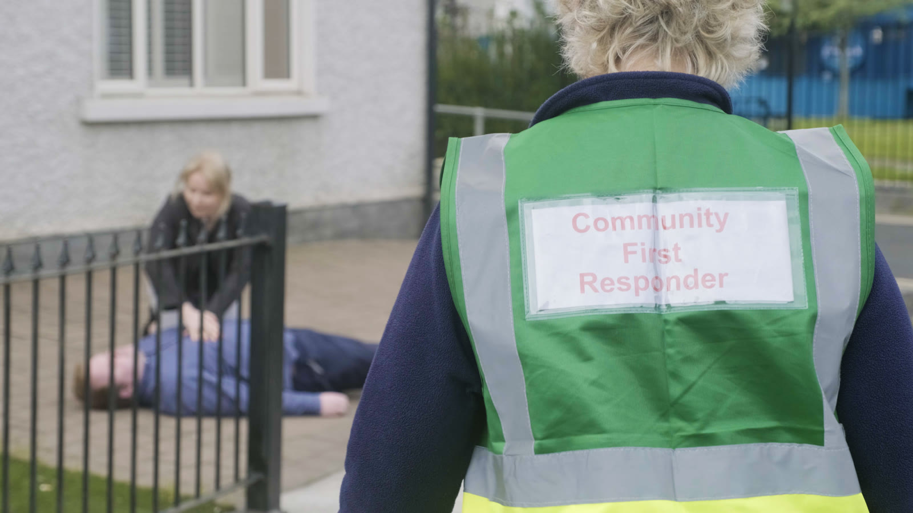

Linked to the National Ambulance Service
Our volunteer group is directly linked to the National Ambulance Service, and we give our time to assist them during critical medical emergencies.
Who we are
We are a dedicated group of local volunteers living and working in and around Dingle. United by a shared commitment to our community, we freely give our time to assist the National Ambulance Service during critical medical emergencies.

Our team
Our team comes from all walks of life. We are local business owners, teachers, farmers and retirees, but we share a singular, vital goal: to be there for our neighbours when every single second counts.
Operating as a completely volunteer-run community organisation, all our members undergo rigorous, accredited training. Every responder is fully certified in essential life-saving skills, including cardiopulmonary resuscitation (CPR) and the effective use of automated external defibrillators (AEDs).

Our mission
To strengthen the chain of survival in and around Dingle by providing rapid, effective, and compassionate early medical intervention to those in need.
Given how far an ambulance has to travel from Tralee to reach Dingle, dispatch times can be significant. Our group bridges this gap, acting as the first link in the chain of survival.
Community First Responders
Dingle Heart Safe is a Community First Responder (CFR) group: volunteers who provide rapid, life-saving care for the local community.
Our volunteer group is directly linked to the National Ambulance Service, and we give our time to assist them during critical medical emergencies.
Every member undergoes rigorous, accredited training and is fully certified in CPR and the use of an AED.
Because we live and work in and around Dingle, we can often reach the scene within minutes, while the ambulance is still on its way.

Working together
Students at Sacred Heart University in Dingle gave up their time to provide the practical training at our latest CPR and defibrillator workshop.
We are also grateful to Kerry County Council, whose financial assistance is key to our continued work, and to everyone who turns up, trains and donates.


Get involved